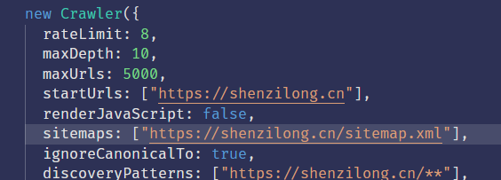
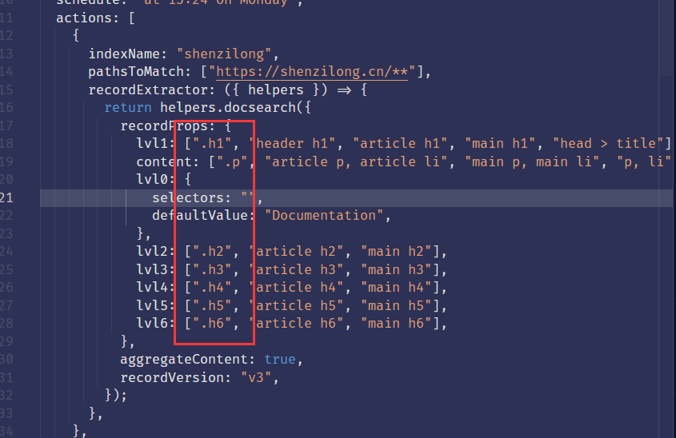
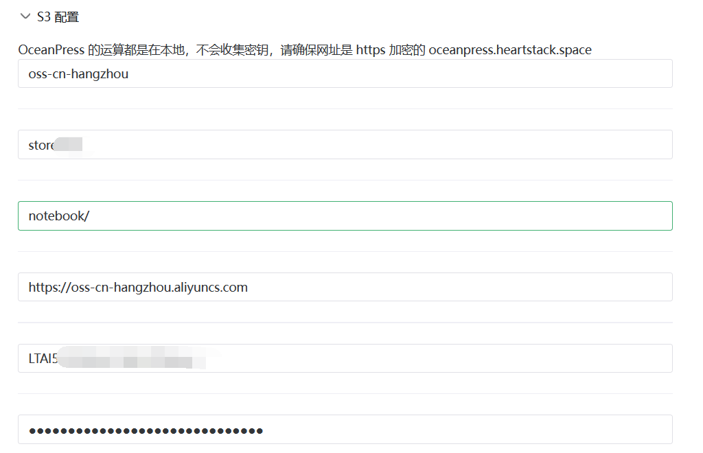

最近更新.rss.xml


xml:base="https://shenzilong.cn/关于/赞助.html" 这样的属性可以设置 XML 的 base 路径，今天给我的
feed
加上了这样的路径 ，但不知道是不是我使用的 rss 阅读器的问题，他好像还是没有办法正确识别。
目前（2023年10月5日）
OceanPress_js
还没有直接支持搜索功能的打算
还有别忘了添加 sitemap.xml ,OceanPress 是支持生成站点地图的。

还需要去 https://crawler.algolia.com 进行配置，添加如下的helper来帮助 algolia 识别 oceanpress 站点（注意这里的账号登录使用你收到邮件的邮箱，之前我使用 github 账号一直不能进去，想来是没有关联邮箱）
他的 DocSearch 对于开源项目文档博客是可以免费申请的

当申请通过之后Algolia会发送一条邮件过来，将其中的代码添加到OceanPress的配置中
推广
此处推荐一个 gpt key 购买网站 - https://console.closeai-asia.com/
此处推荐一个 gpt key 购买网站 - https://console.closeai-asia.com/
published:2023-12-24T13:42:44.000Z
published:2023-12-24T13:42:44.000Z
published:2023-12-24T13:42:44.000Z
published:2023-12-24T13:42:44.000Z
published:2023-12-26T23:23:06.000Z
published:2023-12-26T23:23:06.000Z
published:2023-12-26T23:23:06.000Z
published:2023-12-26T23:23:06.000Z
published:2023-12-27T10:57:26.000Z
published:2023-12-27T10:57:26.000Z
published:2023-12-27T10:57:26.000Z
published:2023-12-27T10:57:26.000Z
s3配置示例图
配置s3
s3配置示例图
配置项
v0.0.8
兼容思源绝大部分效果 🎉
全平台随用随走
基于node.js 的全平台运行能力
基于浏览器网页的全平台、随用随走
支持挂件 (需要挂件本身适配)
通过插件对挂件生成快照，
甚至不适配的都能让你能看见预览效果(需要安装插件，只是能看...)
在网页中显示该快照
适配OceanPress的挂件支持，让一些挂件能够运行在静态网站上
一键部署
网页上传到自定义接口
基于 node.js 命令行自动编译、部署
生成chm单体文件，便于类似分发帮助文档这种需求
SEO 友好，可以放心修改文章名称，移
动块，不用担心分享的链接无法访问到
内容(在笔记中删掉了那我没办法
通过 preload 来实现
基于块id的永久链接
仅支持文档块和标题块，否则体积过大
可读路径的302重写
上面方法无法定位的情况下通过文档
名进行推荐
自动生成 sitemap.xml
更易于复制粘贴分享
许多网站的编辑器都是能够拉取图片的，但有一些的实现是网站后端进行
拉取(避免前端跨域无法拉取)，所以部署到公网的文章可以直接选中片
段粘贴图片，而内网的则不行
小、快、省
通过对输出html结构优化，能够输出体积更小，解析更快的源文件
可选通过cdn加载公共资源文件
更节省服务器流量
更快的js、css加载速度
支持增量编译，编译速度很快
可选的图片优化、压缩、生成预览
支持 RSS，例如:最近更新.rss、推荐阅
读.rss
只需要在文档名后面加上.rss
就会对文章内通过块引用和嵌入块查
询到的块生成 rss.xml指向
一键部署
网页上传到自定义接口
基于 node.js 命令行自动编译、部署
生成chm单体文件，便于类似分发帮助文档这种需求
网页上传到自定义接口
基于 node.js 命令行自动编译、部署
生成chm单体文件，便于类似分发帮助文档这种需求
网页上传到自定义接口
网页上传到自定义接口
一键部署
非常快速🎇从思源笔记本生成一个静态站点，直接访问 oceanpress.heartstack.space 即可使用
feed:https://shenzilong.cn/关于/rss/崮生精选.rss.xml
cron:8 * * * 5 每到周五隔一小时检查一次